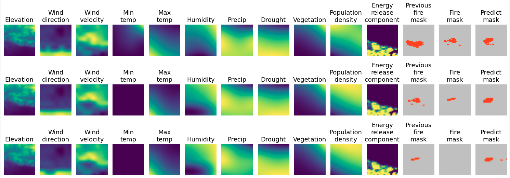
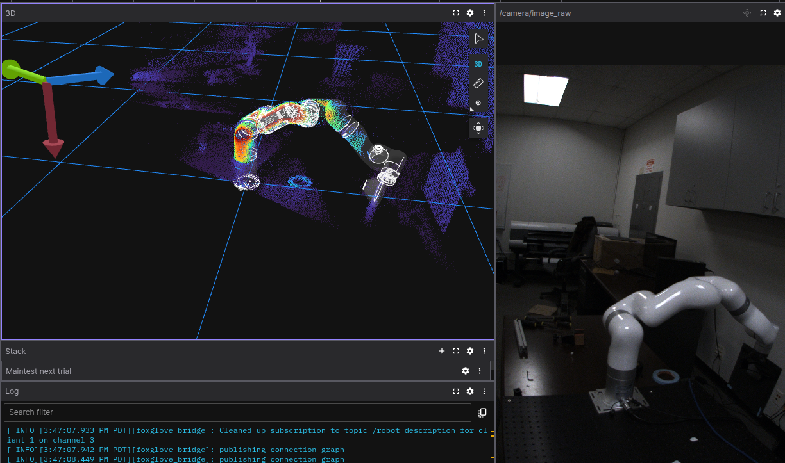
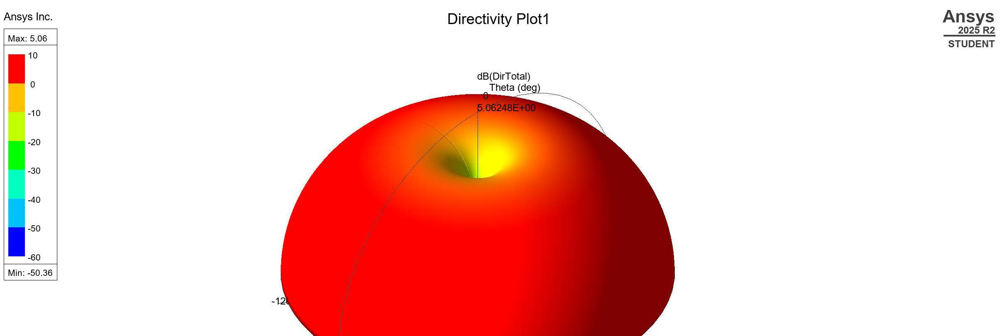
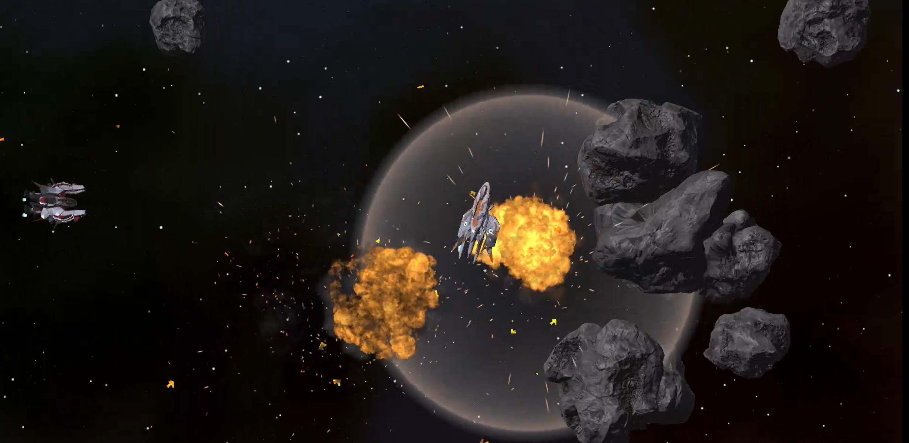
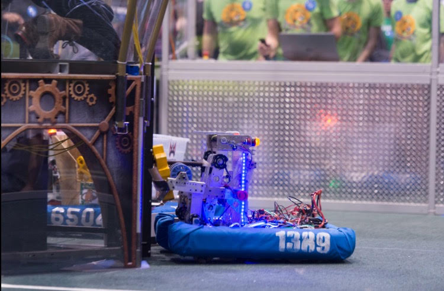
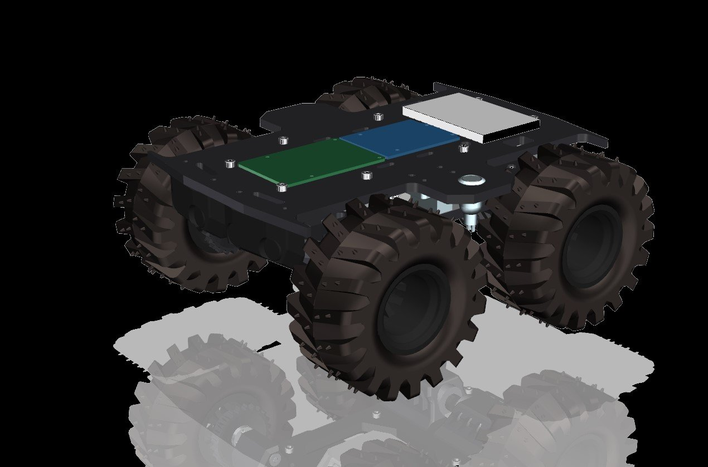
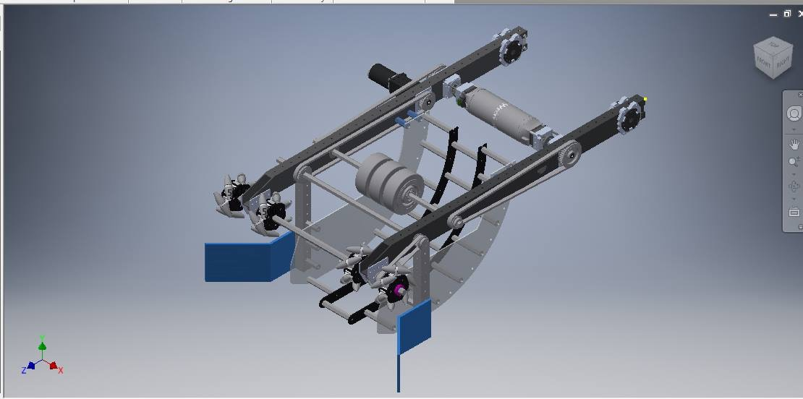

Wildfire Spread Prediction
Deep learning research using Vision Transformers and Swin Transformers for next-day wildfire spread forecasting with explainable AI on geospatial data.
View ProjectHello, I'm
Electrical Engineer
Passionate about signal processing, embedded systems, audio technology, and the intersection of engineering with creative arts.
View My WorkAbout Me
I'm an electrical engineer with hands-on experience spanning signal processing, embedded systems, audio technology, and robotics. My background includes professional work at Aurora Flight Sciences and Humatics Inc., where I contributed to precision positioning systems and autonomous platforms.
Through FIRST Robotics (Team 1389), I developed reusable software libraries, autonomous path-following algorithms, computer vision systems, and real-time web dashboards. I'm also dedicated to STEM education and mentoring through LMU Hillel and community outreach.
I approach engineering with a focus on clean design, rigorous testing, and practical solutions -- whether that means designing a multi-stage op-amp, training a deep RL agent, or wiring a robot's electrical board on a rotating turret.
Portfolio

Deep learning research using Vision Transformers and Swin Transformers for next-day wildfire spread forecasting with explainable AI on geospatial data.
View Project
Autonomous ball-catching robotic arm using an xArm5, ToF depth camera, stereo vision, and ROS 2 MoveIt motion planning.
View Project
RF engineering coursework: microwave circuit analysis, antenna design, S-parameter measurements, and transmission line theory.
View ProjectTwo semesters of EE Junior Lab: multi-stage operational amplifier design and synchronous digital prime counter with JK flip-flops.
View Project
Modernized Atari's Asteroids into a 3D space dogfighting prototype with Behaviour Tree and deep Reinforcement Learning (PPO) opponents in Unity.
View Project
FIRST Robotics Competition software: autonomous path-following algorithms, computer vision systems, reusable libraries, and real-time web dashboards.
View ProjectInternship at Humatics Inc. working with ultra-wideband precision positioning systems and hands-on assembly of the Apollo product.
View Project
ENES100 "Urban Turtle" Over-Sand Vehicle: sensor rigs, drivetrain systems, and autonomous navigation for a robotics prototyping course.
View ProjectIDT Winter 2016 coding competition entry as team "The Flatlanders" -- competitive programming and embedded systems challenge.
View Project
A gallery of hands-on engineering: robot arm redesigns, truss structures, IMU tilt tables, 3D printed parts, and Arduino circuits.
View Project